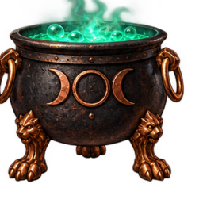

Witch’s Wild Mixer
Gather symbols. Stir the cauldron. Let the magic unfold.

Resets each round
Outcomes use official Stake publish/event shapes. Presentation never changes payout.
Collect matching symbols anywhere on the 6 × 5 board. Winning symbols disappear and new symbols cascade into their place. Potion events increase the cauldron multiplier during this round.
The round win accumulates during the chain. The final result stays visible. The cauldron returns to ×1 for each independent round. Character reactions do not change results.
Spin or Space starts a round. Bet amount changes its size. Fast shortens the presentation. Replay last replays the previous preview round. Sound and motion options are in Settings.
This is an offline visual prototype. RTP, maximum win, symbol payouts, Potion values and Free Spins triggers remain unapproved. Free Spins and autoplay screens are documented in the storyboard for the next development milestone.
Release rules must also explain interrupted rounds, connectivity, illustrative displays, long-term expected return and server-authoritative settlement.
Character animation targets 30 FPS with a four-second loop. Sound is temporary. Reduced motion uses a stable pose.
The coven celebrates
Your round result is shown above. The witch completes her current dance.
Sample outcome. Win tiers and artwork remain in review.
Motion fixture only
This previews the BONUS dance and window choreography. No Free Spins are awarded and no wager is placed.
Live bonus events are a separate M04.2 integration task.